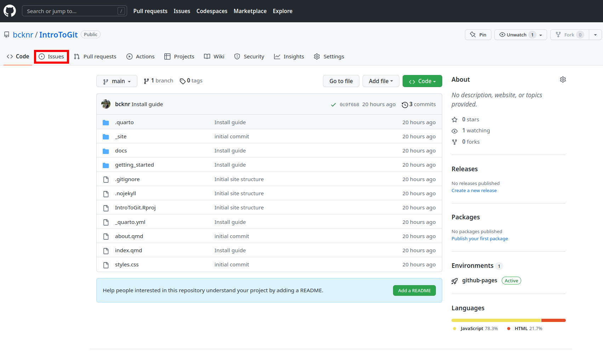
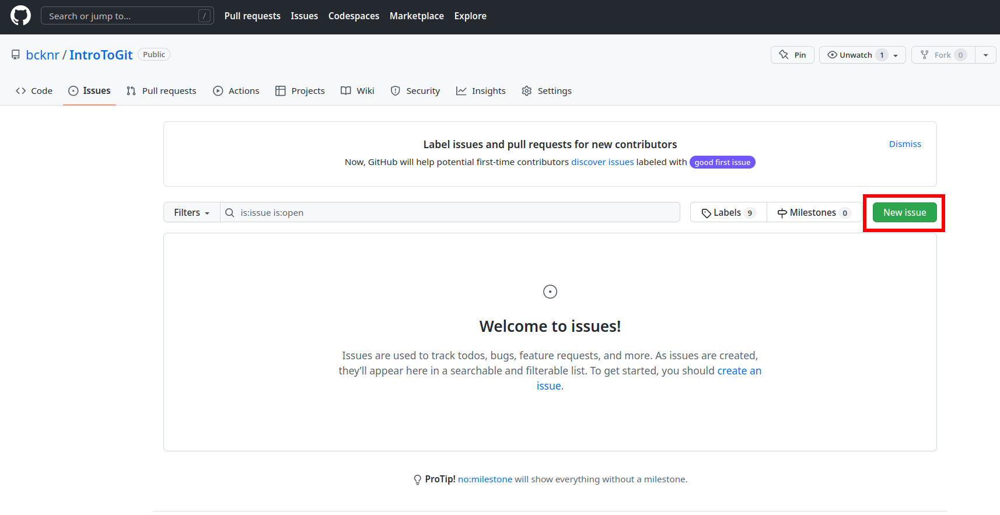
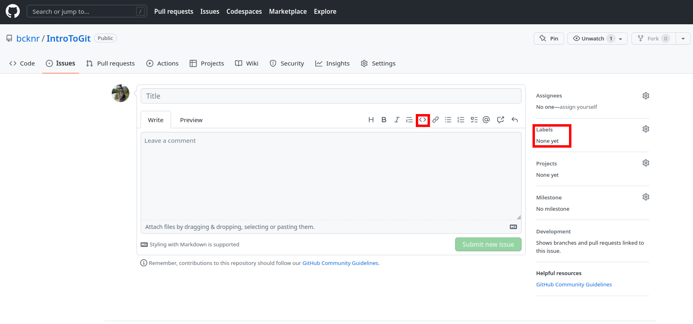

Questions?
If you have questions or get stuck at any point create an issue by clicking “Report an Issue” on the right of every page. Note: a GitHub account is required to submit an issue.
I encourage everyone to keep tabs on the issues in the workshop’s repo and answer each others questions! Feel free to use this as a place to work together as you continue to learn Git and GitHub.
What are issues?
The issues tab is the place in a repo to keep track of bugs, to-dos, feature requests, questions, and more. For the sake of simplicity, there are two main uses for those of us who generally use GitHub for data analysis:
- Many R packages use GitHub for development, and creating an issue is a great way to communicate directly with the package developers. If you are looking for help with a popular R package (think
tidyverse) you are probably better off using resources like Stack Overflow. However, the issue tab can be a great resource for niche or uncommon packages. Just make sure to check that your question wasn’t already answered!
Whenever you ask a question or report a bug, create a Minimal Reproducible Example (MRE). There are many resources for learning about the best practices for MREs, such as this Stack Overflow answer.
- When collaborating with others using GitHub, the issues tab is a great place to communicate and keep organized. You can create to-dos or highlight bugs/errors in the analysis, assign collaborators to certain tasks, and label each issue with custom tags.
Creating an Issue
To create an issue, navigate to the package or projects repo, click Issues -> New issue


Issues support markdown styling, code chunks, and mentions. On the right, you will see options to add labels and to assign the issue to someone.
